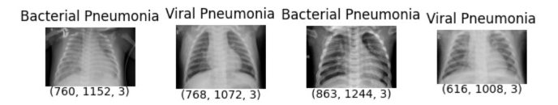

Home
About Me
My work
Contact
Statistical Engineer and Economics Student at ENSAE Dakar
ENSAE stands for Ecole Nationale de la Statistique et de l'Analyse Economique / National School of Statistics and Economics Analysis. Here is the link for those who might be interested to know more about ENSAE and its programs.
I am a Statistical Engineering and Economics student at ENSAE Dakar, currently in my fifth and final year. Alongside my studies, I contribute to the Bureau of the Togolese Students Association and the Informatics Club at ENSAE.
My interests span statistical modeling, machine learning, and artificial intelligence, with a strong enthusiasm for software and game development. I'm particularly passionate about developing new machine learning models that balance predictive performance and interpretability, especially for applications in many diverse fields like Health, Climate and Agricultural Data, Transport...
Beyond applied research, I'm also really passionate about Artificial Intelligence and Intelligent Machines construction. Especially, the question "Will human being be able to develop a human-like or even super-human-like intelligence?" is a question that thrills me and motivates me to go in ML/AI related fields. Ultimately, I will help humanity find answers to this question.
Selected list of works
Below is a selected list of my works. Selected means some I believe that have impacted me the most, be it that it developed my research interest, my machine learning interest or have shaped what I like as a student. These are listed in reverse chronological order i.e. from the most recent (top) to the latest
The full-list is available on my works page
June 2023
Machine Learning Project on Pneumonia Detection
In this project, we applied the CNN architecture and anomaly detection algorithms to classify lungs xray images as viral pneumonia, bacterial pneumonia or normal.